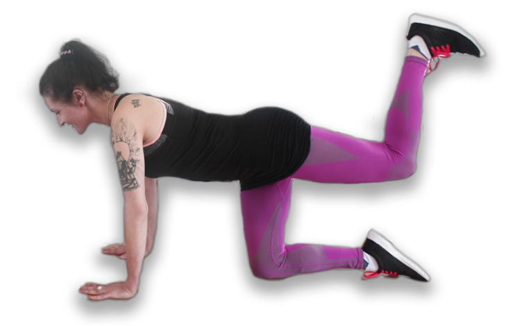
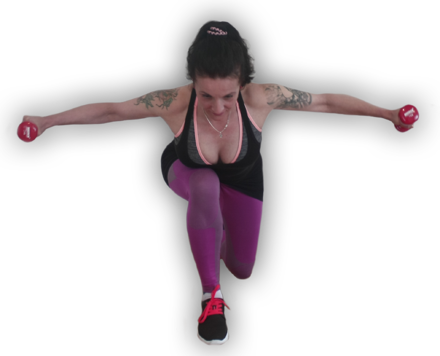
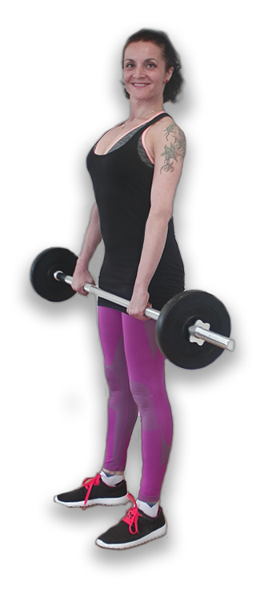
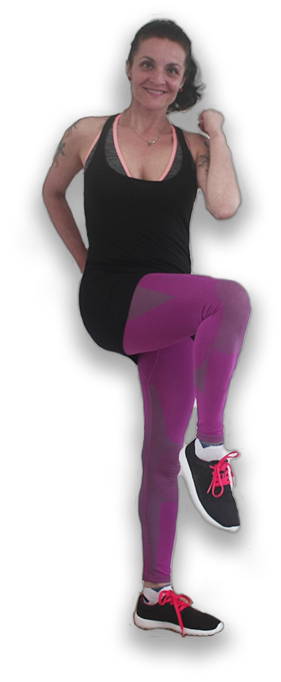
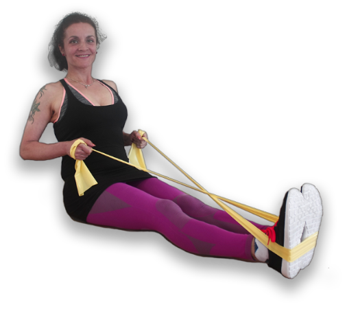

Functional exercise program for women



High-intensity workout routine which works all the basic muscle groups of the body. The total duration is 30-60 minutes. This technique is suitable for beginners as well as for more experienced athletes. Dumbbells, exercise balls, and resistance bands may be incorporated in the routine.